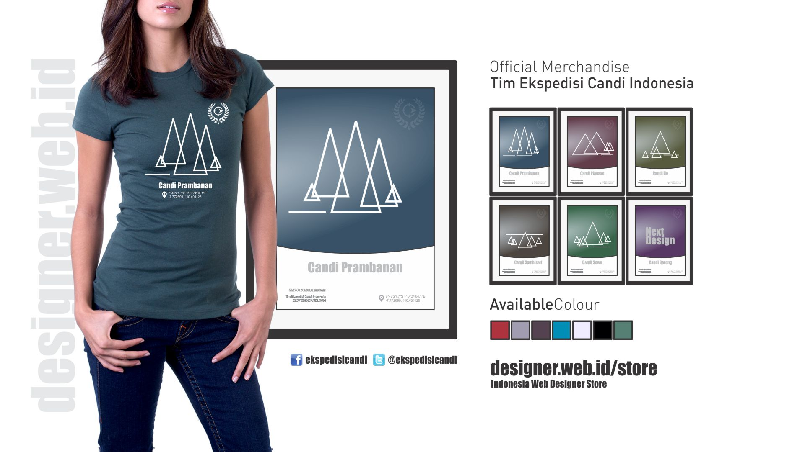
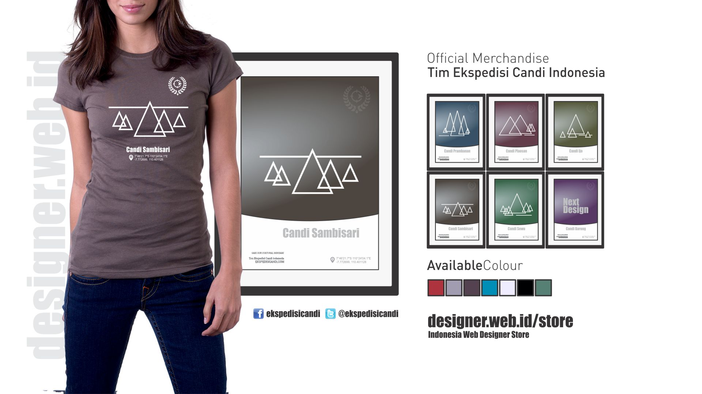

IDWEBDesigner Store
Official Merchandise Tim Ekspedisi Candi Indonesia. Joint us to Explore temples ancient Hindu-Buddhist scattered like mushrooms in the rainy season.
Graphic Design and Responsive Web


Official Website
Tim Ekspedisi Candi Indonesia
Yogyakarta offers stunning architecture with a sense of truly spiritual. Explore the temples and archaeological heritage sites scattered like mushrooms in the rainy season.
Ekspedisicandi.com
24 x 7 Service
Contact Us
Alamat Yogyakarta
Jl. K.H. Wahid Hasyim No. 3 Gaten Condongcatur
Depok Sleman Yogyakarta 55283
24-IDWEBDesigner Support
Website: designer.web.id
Email farid@designer.web.id
+62 8139 2541 831